使い方ガイド User guide
最終更新: __DEPLOY_DATE__ / 対象バージョン: v0.21.0 Last updated: __DEPLOY_DATE__ / Covers v0.21.0
0. このツールの位置づけ 0. What this tool is for
本拡張は、システマティックレビュー（SR）のデータ抽出を補助するツールです。レビュアーを置き換えるものではありません。AI が値と根拠の引用を下書きし、すべての値を人が原文で確かめて判定します。独立した 2 名による二重レビュー（→ 10）を勧めます。 This extension assists the data-extraction step of a systematic review (SR); it does not replace reviewers. AI drafts each value with a supporting quote, and a person checks every value against the source and decides on it. We recommend independent dual review by two people (→ 10).
RAISE 3 の表 2 では、生成 AI によるデータ抽出とバイアスのリスクの評価は「レビューの中での検証が必要」とされています。パイロット抽出（→ 6）で AI の値を自分たちの抽出と突き合わせ、そのレビューでの精度を確かめてから本抽出へ進んでください。 Table 2 of RAISE 3 lists data extraction and risk-of-bias assessment with generative AI as uses that “require validation within the review”. Use the pilot extraction (→ 6) to compare the AI’s values with your own and check its accuracy in your review before the full extraction.
「論文に質問」（→ 8）は探索的・補助的な使い方のための機能です。答えを抽出の結果にせず、値は原文を確かめて自分で入力・判定してください。 “Ask the paper” (→ 8) is for exploratory, supporting use. Do not treat its answers as extraction results; check the source and enter or judge values yourself.
使うべきでない場面 When not to use it
- 人が値を検証せず、AI の出力をそのまま結果にする運用 Workflows in which nobody verifies the values and AI output becomes the result
- スキャン PDF（テキスト層なし）で、人が値を原文と照合しない場合（スキャン PDF では引用の自動照合はできません。座標を返せるモデルでは AI が推定した位置にハイライトを出しますが、位置が正しいかは人が確かめる必要があります） Scanned PDFs (no text layer) when nobody checks the values against the page (quotes cannot be matched automatically; models that return coordinates can highlight AI-estimated locations, but a person must check that the locations are correct)
- 人の検証を経ずに、規制当局への提出資料などに使う場合 Regulatory submissions or similar documents prepared without human verification
評価の限界 Limits of our evaluation
既定モデルの選定とプロンプトの改良には、開発者による実データでのベンチマークを使いました。AI 単独の正確度は、どのモデルでも人の確認なしで使える水準に届いていません。この評価には次の限界があります。 We chose the default model and refined the prompts using our own benchmark on real data. With AI alone, no model reached an accuracy that could be used without human checking. The evaluation has these limits:
- 正解データは開発者自身が作ったものです The reference (gold) data were created by the developer
- 対象は、不眠治療の SR に含まれる英語の RCT 10 本だけです（テキスト入力のみ。スキャン PDF の経路は評価していません） It covers only 10 English-language RCTs from one SR on insomnia treatment (text input only; the scanned-PDF route was not evaluated)
- 同じデータを、プロンプトの改良と既定モデルの選定の両方に使いました The same data were used both to refine the prompts and to choose the default model
- 対象論文は公開済みのため、モデルの学習データに含まれていた可能性があります The papers are published, so they may have been in the models’ training data
- 外部のデータでの検証はまだありません There is no validation on external data yet
- 抽出の反復は各モデル 1 回です Each model was run once (no repeated runs)
集計値と条件は experiments/extraction-benchmark-real-summary/ で公開しています（原論文・正解データは非公開）。 Aggregate results and conditions are published in experiments/extraction-benchmark-real-summary/ (the papers and gold data are not public).
環境への負荷 Environmental cost
LLM の呼び出しは電力を使います。パイロット抽出で項目を絞ってから本抽出へ進み、不要な再抽出を避けてください。 LLM calls consume electricity. Narrow down the fields with a pilot extraction before the full run, and avoid unnecessary re-extraction.
操作解説動画 Video walkthrough
本ガイドの内容を、実際の画面で通しで見られる動画です（全 14 章・約 16 分・英語字幕つき）。説明欄のチャプターから各工程へ頭出しできます。 A walkthrough of this guide on the actual screens: 14 chapters, about 16 minutes, with English subtitles. The chapter list in the video description jumps to each step.
文字が小さいときは、プレーヤー右下の全画面ボタンを押すか、YouTube で開いて見てください。 If the text looks small, use the full-screen button at the bottom right of the player, or open the video on YouTube.
1. 準備（インストールと LLM 接続の設定） 1. Setup: install and connect an LLM
- Chrome ウェブストアの掲載ページから「Chrome に追加」でインストールします。 Install from the Chrome Web Store listing.
- 拡張アイコンを右クリック →「オプション」で設定画面を開き、ご自身の LLM API キーを保存します（BYOK = Bring Your Own Key）。既定は Gemini API で、キーは Google AI Studio から取得できます。 Right-click the extension icon → “Options”, then save your own LLM API key (BYOK). Gemini is the default; you can get a key from Google AI Studio.
- 拡張アイコンをクリックするとプロジェクト選択画面が新しいタブで開きます。「Google でログイン」を押し、メールアドレスと Drive（選択したファイルのみ）へのアクセスを許可します。 Click the extension icon to open the project page in a new tab, sign in with Google and grant access to your email address and Drive (selected files only).
図はクリックすると原寸で開きます。画面は日本語表示で、架空の論文を使ったデモ用のデータです。 Click a figure to open it at full size. Screens are shown in Japanese with fictional demo papers.
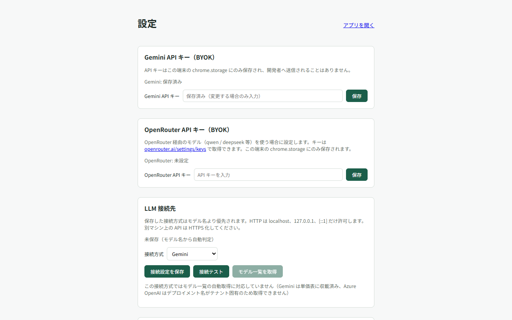
拡張アイコンが見つからないときCan’t find the extension icon?
- アイコンは、アドレスバー右のパズル型のボタン（拡張機能）の中にあります。クリックして「SR Data Extraction Plugin」を選ぶと開きます。 The icon is inside the puzzle-piece button (Extensions) to the right of the address bar. Click it and choose “SR Data Extraction Plugin” to open the extension.
- 一覧の「SR Data Extraction Plugin」の右にあるピンのマーク、または「⋮」→「ツールバーに固定する」を押すと、ツールバーに常に表示され、次回から 1 クリックで開けます（Chrome の版によって、どちらかが表示されます）。 Click the pin to the right of “SR Data Extraction Plugin” in the list, or “⋮” → “Pin to toolbar”, to keep the icon on the toolbar so you can open it with one click next time (which of the two you see depends on your Chrome version).
- タブを閉じても、同じ手順でいつでも開き直せます。 If you close the tab, you can reopen the extension the same way at any time.
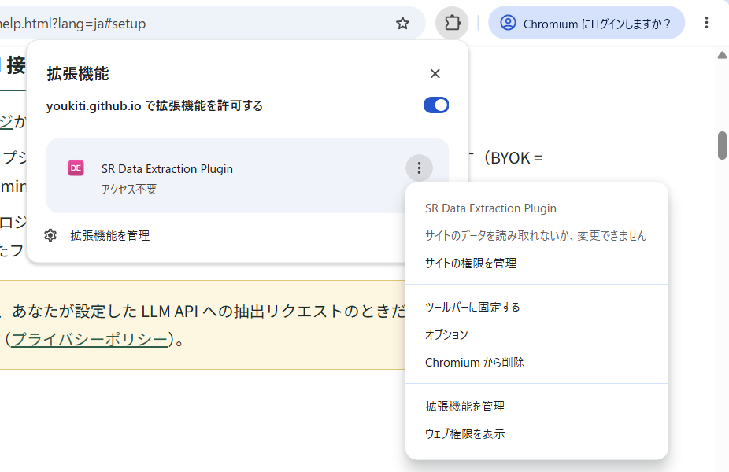
取り込んだ PDF と抽出した本文テキストは、あなた自身の Google ドライブのプロジェクトフォルダに保存されます。AI 機能（表のデザインの AI ドラフト・抽出・論文に質問）を使うときだけ、論文本文（スキャン PDF はページ画像）が、あなたが設定した LLM API へ送られます。送ったプロンプトと応答は監査の記録として同じ Drive の logs/llm に保存されます（ページ画像は伏字にし、質問パネルの会話本文は保存しません）。開発者が運用するサーバーは存在しません（プライバシーポリシー）。 Imported PDFs and extracted full text are saved in the project folder in your own Google Drive. Full text (or page images for scanned PDFs) is sent to the LLM API you configured only when you use the AI features (AI schema drafting, extraction, Ask the paper). Sent prompts and responses are saved as audit records in logs/llm in the same Drive (page images are redacted, and conversation text from the question panel is not saved). There is no developer-operated server (see the privacy policy).
AI へ送る内容の確認（初回だけ） What is sent to the AI (shown once)
最初に AI の機能（スキーマの AI ドラフト、パイロット抽出、一括抽出、引用の AI 再特定、論文への質問）を使うとき、何をどこへ送るかを示す確認が 1 回だけ出ます。送るのは論文の本文（文字を読み取れない PDF はページの画像）、研究プロトコルの本文、抽出項目の定義、質問の文です。AI の処理のために送る先は、設定した LLM API だけです。送ったプロンプトと応答は、監査の記録として利用者自身の Google Drive（プロジェクトの logs/llm）にも保存されます（画像データは除きます）。論文への質問は本文・質問・回答を保存せず、利用量などのメタデータだけを記録します。開発者のサーバーには何も送りません。Gemini API の無料枠では、送った内容が Google の製品改善に使われ、人が読むことがあります。未公開のデータや機密の資料は有料枠で使ってください。「同意して続行」で実行し、「キャンセル」では何も送りません。確認を開いている間に同じ操作を繰り返しても、処理は増えません。「キャンセル」または Esc で閉じると、開く前の操作部へフォーカスが戻ります。同意はこのブラウザのプロファイルに記録され、設定画面の「AI へ送る内容」から見直し・取り消しができます。 The first time you use an AI feature (AI schema draft, pilot extraction, batch extraction, AI quote relocation or asking a paper), a notice shows once what is sent where. The extension sends the text of your papers (page images for PDFs without a text layer), your protocol text, your field definitions and your questions. For AI processing, content is sent only to the LLM API you configured. The prompts sent and the responses are also saved as audit records in your own Google Drive (the project’s logs/llm folder), excluding image data. For paper questions, the paper text, questions and answers are not saved; only metadata such as usage is recorded. Nothing is sent to the developer’s servers. On the Gemini API free tier, what you send may be used to improve Google’s products and may be read by people, so use a paid tier for unpublished data or confidential material. “Agree and continue” runs the feature; “Cancel” sends nothing. Your consent is recorded in this browser profile, and you can review or withdraw it under “What is sent to the AI” in Options. While this notice is open, repeated clicks do not start another operation. Cancel or press Esc to return focus to the control that opened it.
2. プロジェクトを作る・開く 2. Create or open a project
1 つの SR が 1 プロジェクトです。作成すると、プロジェクト DB になる Google スプレッドシートと、PDF ・抽出テキスト・ログを置く Drive フォルダがあなたの Google アカウント内に生成されます。 One project equals one review. Creating a project generates a Google Sheet (the project database) and a Drive folder for PDFs, extracted text and logs inside your own Google account.
- 新規プロジェクト: タイトルを入れて「作成」。 New project: enter a title and press Create.
- 最近のプロジェクト: 一覧から選ぶとそのままメインビューが開きます。 Recent projects: pick one to jump straight into the main view.
- スプレッドシート ID / URL で開く: 共同研究者から共有されたプロジェクトはこの欄から開きます（初回のみ Picker での許可が必要 → トラブルシューティング）。 Open by spreadsheet ID / URL: use this for a project shared with you (the first time you will be asked to grant access via the Picker — see troubleshooting).
- tiab-review から引き継いで作成: tiab-review のスプレッドシートを選ぶと、採用（include）文献をそのまま引き継いでプロジェクトを自動作成します。 Hand-off from tiab-review: select a tiab-review sheet and the project is created automatically, carrying over the included studies.
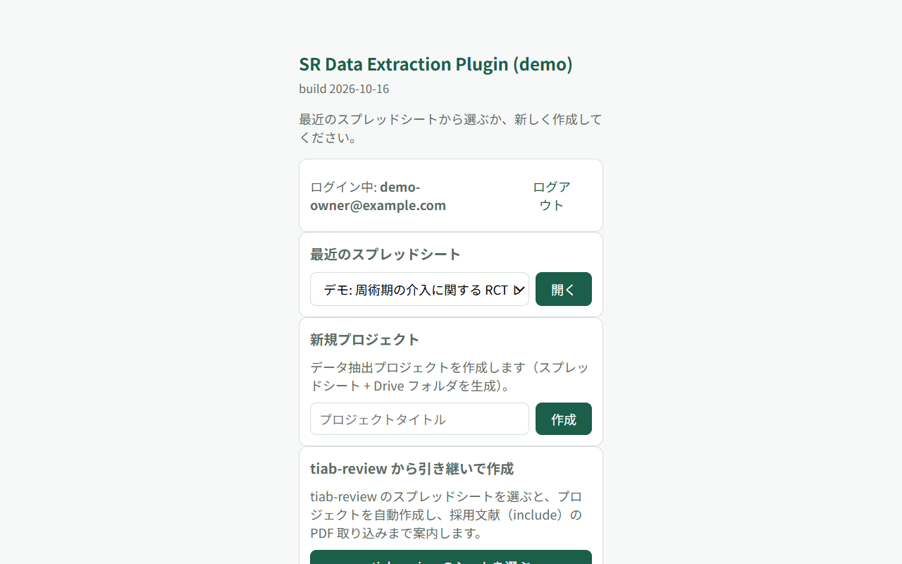
プロジェクトを開くとメインビューが開きます。左サイドバーが工程（Home → 文献取り込み → プロトコル → 表のデザイン → パイロット抽出 → 一括抽出 → 検証 → ダッシュボード → エクスポート）で、前提を満たしていない工程は淡く表示され、クリックすると必要な条件が案内されます。 The main view opens with the workflow in the left sidebar (Home → Import → Protocol → Schema → Pilot → Extract → Verify → Dashboard → Export). Steps whose prerequisites are unmet are dimmed and explain what is missing when clicked.
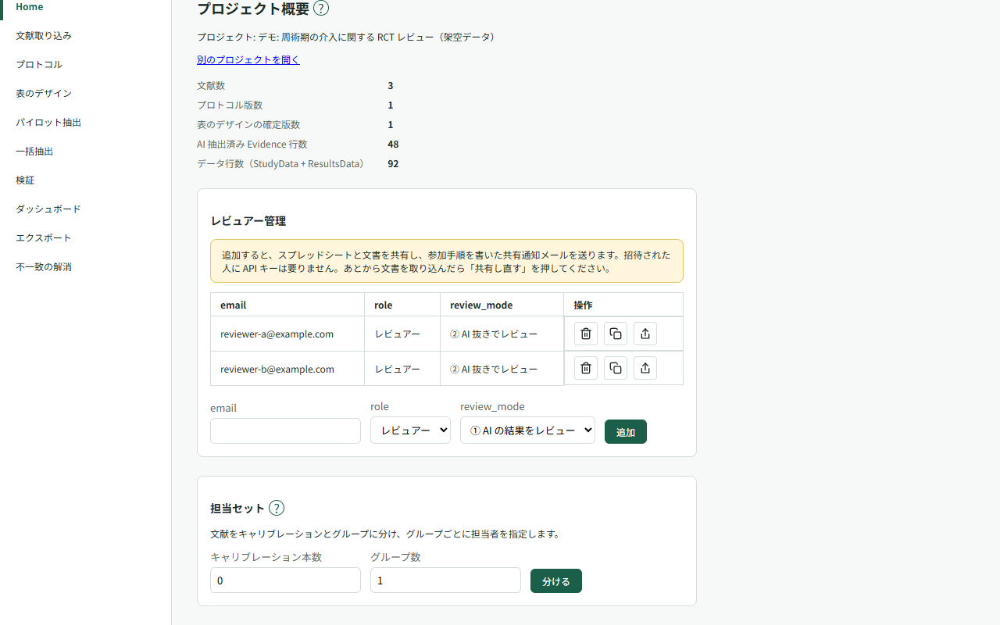
担当セットで分担する Assign studies with review sets
文献を取り込んだら、オーナーが Home の「担当セット」で「キャリブレーション本数」と「グループ数」を入力し、「分ける」を押します。文献が無作為に分割され、キャリブレーションは全員の対象になります。各グループには担当者のメールアドレスをカンマ区切りで入力し、「保存」を押します。 After importing studies, the owner opens “Review sets” on Home, enters “Calibration studies” and “Number of groups”, then presses “Split”. Studies are randomly divided, with calibration studies assigned to everyone. Enter comma-separated reviewer email addresses for each group and press “Save”.
担当セットを使うと、レビュアーの検証対象はキャリブレーションと自分の担当グループに絞られます。オーナーは検証画面の「自分の担当のみ」で絞り込めます。追加した文献は「未割当の study」から割り当てます。「分け直す」は確認後、すべてのアクティブな試験の担当セットを上書きします。 With review sets in use, reviewers see calibration studies and their assigned groups in verification. The owner can filter with “Only my assigned studies”. Assign newly added studies under “Unassigned studies”. After confirmation, “Split again” replaces the assignments for all active studies.
グループに担当者をちょうど 2 名指定すると、その 2 名を裁定のペアとして使います。それ以外は実データからペアを推定します。担当外の判定は裁定・一致度から除外されます。不一致の解消画面で「一致度を計算」を押すと、「キャリブレーションの一致度」でペア別の一致度も確認できます。 A group with exactly two assigned reviewers uses those reviewers as its adjudication pair; otherwise, the pair is inferred from recorded data. Judgments outside the assigned pair are excluded from adjudication and agreement. Press “Compute agreement” on the “Resolve conflicts” screen to also see agreement by pair under “Calibration agreement”.
操作ツアーで最初の流れをたどる Follow the first steps with a guided tour
画面の見出し横の「?」から、その画面のヘルプ・動画・利用可能なツアーの開始を選べます。 Use the “?” beside a screen heading to read its help, watch its video, or start its tour when available.
各ツアーには、同じ手順をたどる短い動画があります（読み上げと画面は日本語です）。 Each tour has a short video showing the same steps (narration and screen are in Japanese).
- はじめての流れ: 文献の取り込みからスキーマの確定までを、画面の上で順に案内します。 プロジェクトのオーナーに表示されます。 Getting started: Follow step-by-step guidance on screen, from importing documents to confirming your schema. Shown to the project owner. ▶ 動画で見る（1:25）▶ Watch video (1:25)
- パイロットと一括抽出: パイロット抽出で結果を確かめ、一括抽出を実行するまでを案内します。 オーナーに、確定した表のデザインと取り込んだ文献があるときに表示されます。 Pilot and full extraction: Check the pilot extraction results, then run full extraction. Shown to the owner once a table design has been confirmed and documents have been imported. ▶ 動画で見る（1:14）▶ Watch video (1:14)
- 検証の進めかた: 根拠のハイライトを見ながら、抽出された値を判定する流れを案内します。 オーナーと、AI の結果を見ながら検証するレビュアーに、AI が抽出した結果があるときに表示されます。レビュアーの場合は、検証画面で文献を読み込んだあとに一覧へ出ます。 Verification basics: Review extracted values while checking the highlighted evidence. Shown to the owner and to reviewers who review AI results, once AI-extracted results exist. For reviewers, it appears in the list after the verification screen has loaded the studies. ▶ 動画で見る（1:15）▶ Watch video (1:15)
- 二重レビューと不一致の解消: レビュアーの登録、担当セットの分割、不一致の裁定までを案内します。 オーナーに、取り込んだ文献があるときに表示されます。 Dual review and conflict resolution: Register reviewers, split assignment sets, and adjudicate disagreements. Shown to the owner once documents have been imported. ▶ 動画で見る（1:48）▶ Watch video (1:48)
- エクスポート: 進捗を確かめ、CSV と R セットを書き出すまでを案内します。 オーナーに、書き出せる抽出データがあるときに表示されます。 Export data: Check progress and export CSV files and an R set. Shown to the owner once there is extracted data to export. ▶ 動画で見る（1:11）▶ Watch video (1:11)
案内中は、引用の削除と担当セットの分割・分け直しを押せない手順があります。 During some tour steps, removing quotes and splitting or re-splitting assignment sets are blocked.
操作ツアーは、画面の上で次に押す場所を枠で示し、近くに説明のカードを出して順に案内します。ヘッダの「ツアー」で一覧を開き、「始める」を押してください。「はじめての流れ」はプロジェクトのオーナーにだけ表示されます。 Guided tours outline the next control to use and show an explanation card nearby, guiding you step by step on screen. Open the list with “Tours” in the header and select “Start”. “Getting started” is shown only to the project owner.
オーナーが初めて Home を開いたときは、先頭に案内の帯が出ます（ツアーが未実施・未終了で、実行中でも提案停止中でもない場合）。「ツアーで進める」で開始し、「あとで」で現在のセッションの提案を止め、「今後表示しない」で以後の自動提案を止めます。提案を止めても一覧から始められます。 When the owner first opens Home, a suggestion band appears at the top, provided the tour has not been taken or ended, is not running, and suggestions have not been paused or disabled. “Take the tour” starts it, “Later” pauses suggestions for the current session, and “Do not suggest again” disables future automatic suggestions. You can still start from the list.
「はじめての流れ」は、文献の取り込み → プロトコル → 表のデザインのドラフトと確定を案内します。すでに文献・プロトコル・確定済みの表のデザインがあれば、対応する手順を飛ばします。「AI に表のデザインをドラフトさせる」を押すかどうかは自分で決められます（API の費用がかかります）。この手順の案内は「次へ」で進めます。 “Getting started” guides you through importing documents, entering a protocol, and drafting and confirming the table design. Steps are skipped when documents, a protocol, or a confirmed table design already exist. You decide whether to select “Have AI draft the table design” (API charges apply). Select “Next” to continue the tour from this step.
画面の移動・取り込み・保存・確定など、案内された操作をすると自動で次へ進みます。「次へ」は案内を進めるボタンです。まだ確定しない場合は「押さずに次へ」で確定せずに進めます。最後の「完了」で案内を完了し、「ツアーを終える」で途中終了します。 The tour advances automatically when you perform the guided navigation, import, save, or confirmation action. “Next” advances the guidance. If you are not ready to confirm, “Skip this action” continues without confirming. “Finish” completes the tour at the last step; “End tour” stops it early.
対象が画面に無い・見えないときは「対象が表示されるのを待っています。」と表示されます。対象の画面が指定されていて、今いる画面と違う場合は「この画面へ移動」で移動できます。 If the target is missing or not visible, the card displays “Waiting for the target to appear.” If a target screen is specified and differs from the current screen, select “Go to this screen” to navigate there.
ツアーの途中でタブを閉じても、開き直すと保存済みの手順から再開します。「ツアーを終える」で終了した場合は続きからの再開にはなりません。完了・途中終了したツアーも一覧からもう一度始められます。 If you close the tab during a tour, reopening it resumes from the saved step. Selecting “End tour” ends it without keeping a step to resume. You can start completed or ended tours again from the list.
3. 文献を取り込む 3. Import documents
採用論文の PDF を取り込みます。Google Drive から選ぶ（フォルダを選ぶと直下の PDF をまとめて取り込みます）か、この PC からドラッグ & ドロップ / ファイル選択できます。取り込み時に PDF のテキスト層を抽出します。 Import the PDFs of your included studies — from Google Drive (selecting a folder imports the PDFs directly inside it) or from your computer by drag & drop / file picker. The text layer is extracted on import.
tiab-review の採用リストは、フルテキストの最新の裁定を優先します（裁定がなければ通常票の OR 合議）。裁定が maybe の文献は取り込みません。プレビューに「裁定を反映した採用件数（取り込む件数）」と「OR 合議なら採用になる件数」を表示します。裁定で採用対象外になった文献があれば、警告とタイトル一覧が出ます。フルテキスト相では、tiab-review のフルテキスト候補に入らない文献は取り込みません。候補外のため取り込み対象から外した文献は、別の警告で件数とタイトル一覧をプレビューに表示します。取り込みは続行できます。TiAb 相の採用判定は変わりません。再取り込みでも既存 study は自動除外されません。必要に応じて「study の除外」を行ってください。 The tiab-review included list uses the latest full-text adjudication, falling back to OR consensus of regular votes when there is no adjudication. A maybe adjudication is not included. The preview shows the count after adjudication (to import) and the OR consensus count. A warning lists any titles no longer included after adjudication. In the full-text phase, references outside tiab-review’s project full-text candidates are not imported. A separate preview warning shows the count and titles excluded for this reason. You can continue importing. Title/abstract phase inclusion is unchanged. Re-importing does not automatically exclude existing studies. Use “Exclude study” as needed.
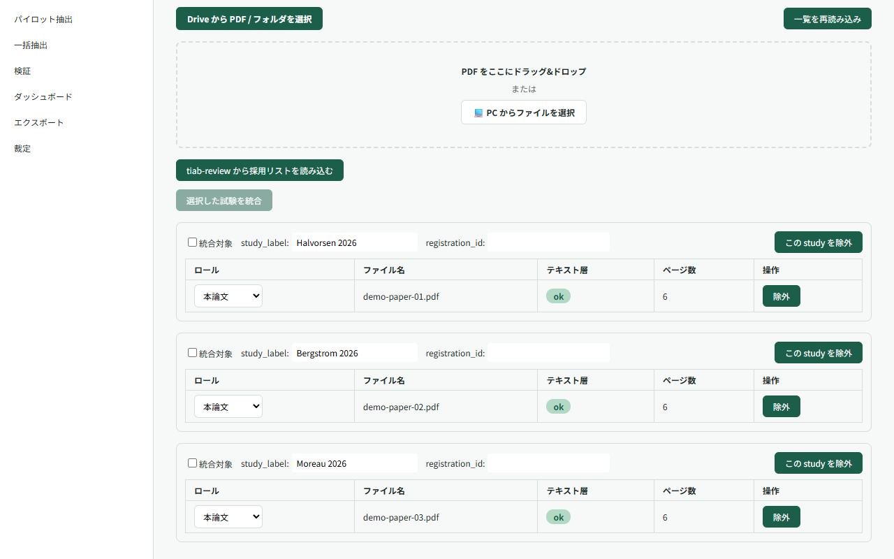
-
テキスト層の状態は一覧に
ok/partial/no_text_layerのバッジで表示されます。no_text_layer（スキャン PDF）は根拠ハイライトが使えず、pdf_native モードでの抽出のみ可能です。 Each document shows anok/partial/no_text_layerbadge. Scanned PDFs (no_text_layer) cannot be highlighted and can only be processed in pdf_native mode. - 同じ試験の複数文書（本文 + 補遺など）は、取り込み後に「統合」でひとつの試験（study）にまとめられます。 Multiple documents of the same trial (main paper + supplement) can be merged into a single study after import.
4. プロトコルを登録する 4. Register the protocol
研究プロトコル（RQ・組入 / 除外基準など）を手入力するか、.md / .docx
ファイルから取り込みます。次の工程で AI が表のデザインをドラフトする際の参照元になります。保存は常に新しい版として追記され、過去の版は残ります。
Enter your protocol (research question, eligibility criteria, …) by hand or import a .md /
.docx file. It is the source AI reads when drafting the schema. Every save is appended as a
new version; earlier versions are kept.
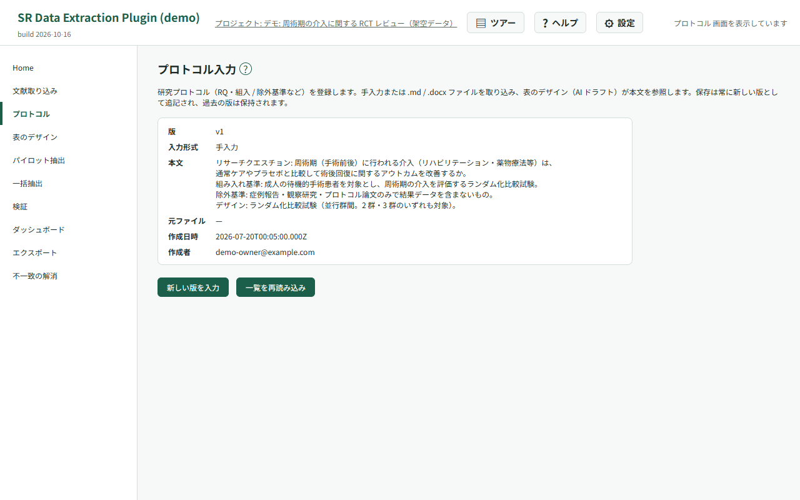
5. 表のデザイン（抽出項目）を決める 5. Design the extraction schema
抽出したい項目のリスト＝スプレッドシートの見出し行にあたるものを作ります（例: 著者名・出版年・対象患者数）。プロトコルとサンプル論文 1〜3 本から AI にドラフトさせ、表形式エディタで項目の追加・削除・型変更・抽出指示（extraction_instruction）の編集を行い、版として確定します。 Define the list of fields to extract — the header row of your coding sheet. AI drafts it from the protocol and 1–3 sample papers; you then add, remove, retype fields and edit their extraction instructions in a table editor before fixing it as a version.
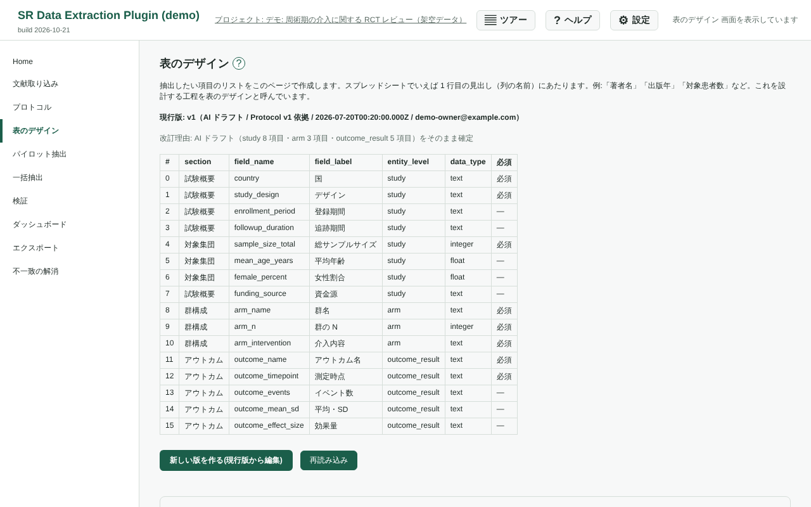
- 「必須」は、論文に必ず書いてあるはずの項目です。チェックを外しても列は残ります。使わない項目は「削除」で表から外してください。 “Required” means an item expected to be reported in the paper. Unchecking it keeps the column. Use “Remove” to take an unused item out of the table.
- はい / いいえの項目（boolean）は、パイロット結果・検証画面・相談用ドキュメントで「はい」「いいえ」と表示します。「いいえ」（FALSE）も有効な結果で、抽出失敗ではありません。保存値と CSV は TRUE / FALSE のままです。 Boolean items appear as “Yes” or “No” in pilot results, verification, and consultation documents. “No” (FALSE) is a valid result, not an extraction failure. Stored values and CSV exports remain TRUE / FALSE.
- 項目数に上限はありません（AI が一度に提案する目安が 10〜40 個というだけです）。 There is no cap on the number of fields; 10–40 is merely how many AI proposes at once.
- バイアスリスク評価は RoB 2 / ROBINS-I / QUADAS-3 / QUIPS のテンプレートを事前設定として取り込めます。 Risk-of-bias templates (RoB 2, ROBINS-I, QUADAS-3, QUIPS) can be pre-loaded into the schema.
- 版履歴から過去の版を確認でき、プロトコルを改訂したら AI に再ドラフトさせて差分（追加 / 変更 / 削除候補）を確認できます。 You can browse past versions and, after revising the protocol, ask AI to re-draft and review the diff (added / changed / removal candidates).
- 確定した版は、共同研究者と相談するための Google ドキュメントとして Drive に書き出せます（項目の一覧、 パイロットでの AI の抽出例、項目ごとの判定の内訳、RoB などの事前設定）。共有は Google ドキュメント側で行います。 You can export a confirmed version as a Google Doc in Drive for consulting co-researchers (the field list, AI examples from the pilot, per-field decision breakdown, and pre-specification settings such as RoB). Share it from Google Docs.
- 前の版の設定に戻したいときは、確定済みの画面の「前の版の内容に戻す」で版を選びます。最新版との差分（戻す項目・設定が違う項目・消える項目）を確認してから、その内容を新しい版として確定します。版の番号は巻き戻さず、過去の版も残ります。共通する項目は最新版の項目名のまま、抽出結果と判定もそのまま引き継がれます。 To go back to an earlier version, choose it under “Revert to an earlier version” on the confirmed screen. Review the differences from the latest version (fields brought back, fields with different settings, and fields to remove), then save the contents as a new version. Version numbers are not rolled back and earlier versions are kept. Shared fields keep their latest field names, and their extraction results and decisions carry over.
- 確定した版は、確定済みの画面の「スキーマのファイル（JSON）」で JSON ファイルに書き出せます。RoB などの事前設定も含まれ、論文のデータや判定は含まれません。別のプロジェクトでは、同じカード（スキーマがまだ無いときはドラフト前の画面）でそのファイルを読み込みます。スキーマが既にあるプロジェクトでは、最新版との差分（ファイルにだけある項目・設定が違う項目・最新版にだけある項目）を確認してから反映します。最新版にだけある項目は、既定では残ります。同じ名前の項目は、今のプロジェクトの項目として引き継がれます。 You can export a confirmed version as a JSON file under “Schema file (JSON)” on the confirmed screen. It includes pre-specification settings such as RoB, but not study data or decisions. In another project, import the file from the same card (or from the screen before drafting if there is no schema yet). If the project already has a schema, you review the differences from the latest version (fields only in the file, fields with different settings, and fields only in the latest version) before applying them. Fields only in the latest version are kept by default. Fields with the same name are carried over as the project's existing fields.
- テキスト型の項目では「複数の引用を許可」を ON にできます（既定は OFF。最大件数は 2〜20）。主に質的なデータ（テーマの抽出など）を取りたいときに使います。AI はテーマごとに根拠の箇所を 1 つずつ引用し、値はテーマ名の一覧（「A; B; C」）になります。検証画面では引用を一覧で確認し、判定は項目ごとに 1 回です。AI が拾えなかったテーマは値を修正して書き足し、根拠はメモに書いてください。 For text fields you can turn on “Allow multiple quotes” (off by default; up to 2–20 quotes). Use it mainly for qualitative data such as themes. AI quotes one supporting passage per theme, and the value becomes the list of theme names (“A; B; C”). On the verification screen you review the quotes as a list and make one decision per field. Add any theme AI missed by editing the value, and put its source in the note.
- 引用の選び方は抽出指示に書きます。例（質的研究の「課題」）:「参加者が語った課題を、テーマごとに 1 つずつ挙げる。根拠は参加者の発言の引用（段落を分けたブロック引用、または本文中の短い引用）を優先し、著者の要約しか無いテーマは著者の記述を引用する。単語だけの引用符や強調の引用符は根拠にしない。同じテーマに候補が複数あるときは最も長いものを 1 つ選ぶ。」テーマの粒度（論文の大分類か小分類か）は文脈で変わるため、「小分類（サブテーマ）の単位で挙げる」のように指示で明示してください。 Say how to choose quotes in the extraction instruction. Example (qualitative “challenges”): “List each challenge participants described, one per theme. Prefer participants’ own words (block quotes or short in-text quotes); if a theme only appears in the authors’ summary, quote the authors. Do not use single-word quotation marks or quotation marks used for emphasis as evidence. If several candidates exist for one theme, pick the longest one.” The granularity of themes (the paper’s main categories or its subcategories) varies with context, so state it explicitly, for example “list one item per subtheme”.
-
data_type が enum（決まった選択肢から選ぶ）の項目では「複数選択」を ON にできます。当てはまる選択肢をすべて選ぶ項目に使います。AI
は選んだ選択肢ごとに根拠の箇所を 1 つずつ引用します。「単独選択肢（| 区切り）」には、ほかの選択肢と同時に選べない選択肢（例:
NA|unclear）を書きます。「自由記述付き選択肢（| 区切り）」には、説明を添えられる選択肢（例:Other）を書きます。ON にしたとき 2 つの欄が空なら、許容値の NA・N/A・unclear が単独選択肢に、Other が自由記述付き選択肢に自動で入ります。 For fields whose data_type is enum (choose from fixed options) you can turn on “Multiple selection”. Use it when every option that applies should be chosen. AI quotes one supporting passage per chosen option. Under “Exclusive options (separated by |)”, list options that cannot be combined with any other (e.g.NA|unclear). Under “Options with free text (separated by |)”, list options that take a short description (e.g.Other). When you turn it on with both boxes empty, NA, N/A and unclear from the allowed values go into the exclusive options and Other goes into the options with free text.
自由記述を選択肢に変える Convert free text to a choice list
データ型は「自由記述（text）」「選択肢（enum）」「整数（integer）」などの名前で表示します。自由記述の項目を分類して集計したいときは、編集中の行の「選択肢にする」を押してください。AI が項目のラベル・抽出指示と、読み込み済みのパイロットの値（あれば）をもとに、unclear / other を含む3〜8個の小文字スネークケースの選択肢（例: interview|focus_group|other|unclear）を提案します。設定した既定モデルを使うため API の費用がかかります。
Data types are shown as “Free text (text)”, “Choice list (enum)”, “Integer (integer)”, and so on. To group free-text answers for analysis, click “Make a choice list” on the row you are editing. Using the field label, extraction instruction, and loaded pilot values (if available), AI suggests 3–8 lowercase snake_case choices including unclear / other (e.g. interview|focus_group|other|unclear). This uses your default model and incurs API costs.
押した行の直下に出る候補を | 区切りの欄で編集し、抽出指示に「次から1つ選ぶ」と候補を追記するかを選んで、「この候補を反映」を押します。データ型が「選択肢（enum）」になり、許容値が入ります。最後に「版として確定」で保存してください。キャンセルや生成失敗では元の行は変わりません。 Edit the suggested choices in the box directly below that row, separated by |. Choose whether to append “Choose one of the following” and the choices to the extraction instruction, then click “Apply these choices”. The data type becomes “Choice list (enum)” and the allowed values are filled in. Save with “Confirm as a version”. Cancelling or a failed suggestion leaves the original row unchanged.
複数選択の項目では、許容値に NR を入れないでください（検証エラーになります）。論文に記載が無いときは、検証画面の「未報告」ボタンで付けます。
Do not include NR in the allowed values of a multiple-selection field (it is a validation
error). When the paper does not report it, use the “Not reported” button on the verification
screen.
6. パイロット抽出で試す 6. Pilot extraction
いきなり全件を回す前に、2〜3 本の論文で AI 抽出を試します。検証 UI がそのまま埋め込まれているので、抽出結果の質をその場で確認し、表のデザインを改訂して再パイロット、という往復ができます。過去のパイロット結果も残ります。 Before running everything, try 2–3 papers. The verification UI is embedded here, so you can judge the output quality on the spot, revise the schema and pilot again. Past pilot runs are kept.
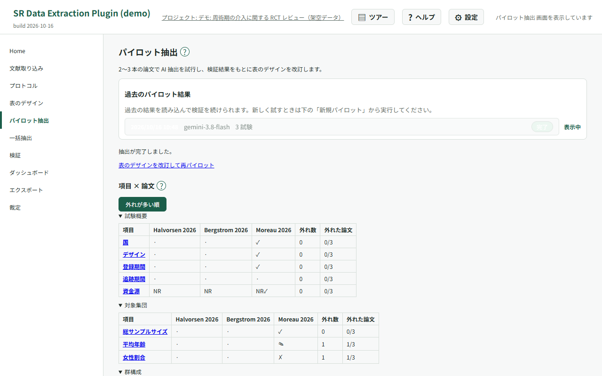
判定メモと再パイロット Judgment notes and repeat pilots
パイロット結果を修正・棄却するときは、「判定メモ（任意）」に理由や抽出指示の改善点を入力してから値を確定できます。メモはその判定とともに保存されます。 When editing or rejecting a pilot result, enter a reason or a suggested instruction improvement in “Judgment note (optional)” before confirming the value. The note is saved with that judgment.
再パイロットの既定選択では、テキスト層があり、過去のパイロットで未使用の試験を最大 3 件優先します。未使用の候補が無い場合だけ使用済みの試験から選びます。「過去のパイロットで使用」の表示を参考に、チェックボックスで対象を変更できます。 The default selection for a repeat pilot prioritizes up to three studies with text layers that have not been used in a pilot. Previously used studies are selected only when no unused candidates remain. Use the “Used in a previous pilot” labels and checkboxes to adjust the selection.
項目ごとの外れを確認する Find fields that need attention
パイロット結果の「項目 × 論文」では、行が抽出項目、列が試験です。採用・修正・棄却・未報告・根拠の位置特定失敗などを凡例と照らして確認します。群やアウトカムなど、1 試験に複数の値がある項目は、外れ数と判定済みの数で表示します。外れには修正、棄却、AI が値を出したものを未報告とした判定を数えます。外れの数と割合は判定済みのものだけで数え、未判定（根拠の位置特定に失敗したまま未判定のものを含む）は「未判定の論文」の列に別に出します。外れがあり未判定も残る論文は、判定済みと未判定の両方の列に数えます。判定済みが 0 件の項目は割合を「—」と表示します。 In “Fields × studies”, rows are extraction fields and columns are studies. Use the legend to read accepted, edited, rejected, not-reported and anchoring states. Fields with multiple values per study, such as arms or outcomes, show misses out of the number of reviewed entities. Misses include edits, rejections and values supplied by AI but judged not reported. Misses and proportions count reviewed values only; unreviewed values (including unreviewed values whose quotes failed anchoring) appear separately in the “Studies not yet reviewed” column. Studies with both misses and unreviewed values count in both the reviewed and not-yet-reviewed columns. A field with no reviewed studies shows “—” for the proportion.
「外れが多い順」で外れた論文の割合が高い項目から確認し、項目名を押すと表のデザインの該当項目へ移動できます。編集欄には外れた論文の AI の値・判定後の値・判定メモが参考表示されます。「前回」列では前のパイロットとの変化を確認できますが、対象論文が違う場合はその違いも割合に影響します。 Use “Most misses first” to start with fields having the highest proportion of studies with misses. Click a field name to open it in the schema editor, where the missed studies’ AI values, reviewed values and judgment notes appear for reference. The “Previous” column compares pilot runs; when the studies differ, those differences also affect the proportions.
7. 一括抽出を実行する 7. Run the full extraction
対象試験（既定は未抽出の全件）とモデルを選び、コスト概算を確認してから実行します。進捗バーで状況が見え、失敗した文献は個別に再試行できます。 Select the target studies (all not-yet-extracted ones by default) and the model, review the cost estimate and start. A progress bar shows the state and failed documents can be retried individually.
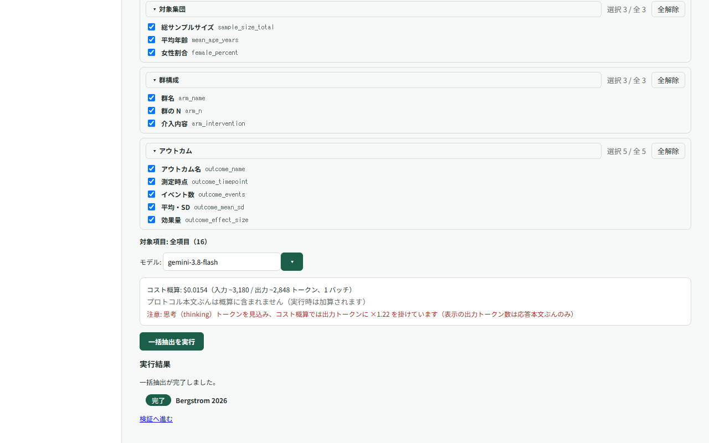
件数が多いと LLM API のレート制限（429）に当たります。設定画面の「レート制限」で契約プランに合った tier を選んでおくと、スロットル間隔と再試行が自動で調整されます（→ 設定）。 Large batches can hit the provider’s rate limit (429). Pick the tier matching your plan under “Rate limiting” in the options and throttling / retries adjust automatically.
8. 検証する（中核の工程） 8. Verify (the core step)
左に PDF ビューア、右に抽出フォームの 2 ペインです。AI が付けた根拠 quote が PDF 上でハイライトされ、それを見ながら各値を判定します。 A two-pane screen: the PDF viewer on the left, the extraction form on the right. Evidence quotes are highlighted on the PDF while you decide each value.
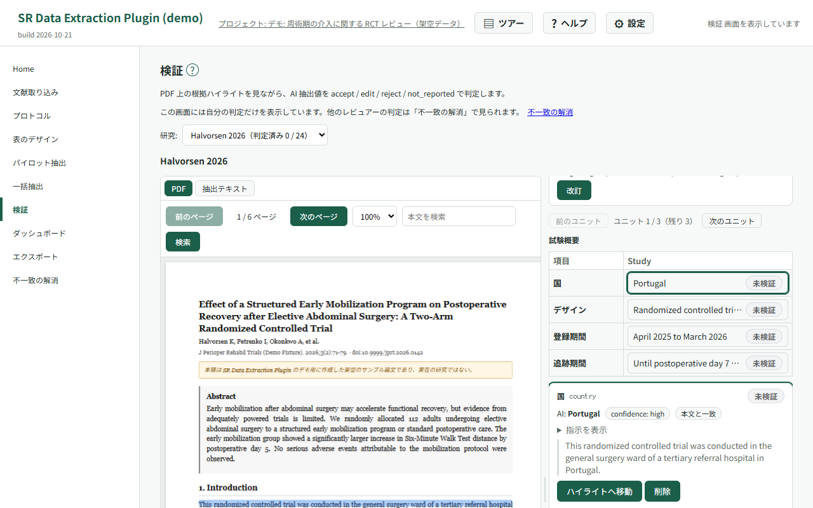
| 判定Decision | 意味Meaning |
|---|---|
accept |
AI の値をそのまま採用する Take the AI value as it is |
edit |
値を修正して採用する Correct the value and take it |
reject |
AI の値を棄却する（誤り） Reject the AI value as wrong |
not_reported |
論文に記載がないと確認した Confirmed as not reported in the paper |
進めかた How to work through it
- 項目は study（試験レベル）→ arm（群）→ outcome_result（アウトカム）の順にタブが並びます。arm タブを開く前に群構成カードで群の数と名称を確定すると、arm / outcome の入力ができるようになります。群比較のない調査・質的研究などで 0 群の場合は「群比較なし（単群）として確定」を押すと、「全体」1 群で確定できます（独立入力も同様）。確定後も「改訂」で名称変更や群の追加ができます。ロック中のタブには「群構成を確定すると開きます」という説明が付きます。 Tabs run study → arm → outcome_result. Confirm the number and names of arms in the arm structure card to unlock arm and outcome entry. For surveys, qualitative studies or other studies without group comparisons, when no arms are listed, choose “Confirm as a single arm (no group comparison)” to confirm one arm named “All participants” (also available for independent entry). Use “Revise” afterward to rename it or add arms. Locked tabs explain: “Confirm the arm structure to open this tab”.
-
判定はキーボードでも行えます:
a= accept /e= edit /x= reject /n= not reported、jkで移動、zで直前の判定を戻す、fで該当ハイライトへスクロール。判定すると自動で次の未判定セルへ移ります。 Keyboard:aaccept,eedit,xreject,nnot reported;j/kto move,zto undo the last decision,fto scroll to the highlight. Focus advances to the next undecided cell automatically. - 根拠が本文に見つからなかった項目（anchor 失敗）は quote 全文と「本文内を検索」ボタンが出ます。「AI で再特定」で位置を取り直すこともできます。AI の値の横のバッジは、引用と本文の照合の結果を「本文と一致」「本文とおおむね一致（要確認）」「本文で見つからない」で示します。 When a quote could not be anchored, the full quote and a “search in text” button appear; you can also ask AI to relocate it. The badge next to the AI value shows how the quote matched the PDF text: “Matches the text”, “Roughly matches the text (check it)” or “Not found in the text”.
-
引用が本文で見つからない項目と、スキャン PDF のため本文と照合できていない項目では、1 回目の承認
(a) では確定せず、注意を表示します。PDF で値を確かめてから、もう一度承認すると確定します。a キーの押しっぱなしでは確定しないので、一度離して押し直してください。この承認は判定の記録（Decisions
のメモ）に
[unanchored-accept]の印が付きます。別の項目へ移るか、修正・棄却・未報告を選ぶと注意は消えます。 For a value whose quote was not found in the PDF text, or could not be checked because the PDF is a scan, the first Accept (a) does not save; a caution appears instead. Check the value in the PDF and press Accept again to save it. Holding down a does not confirm the value; release the key and press it again. That decision is marked[unanchored-accept]in the decision log (the Decisions note). Moving to another field, or choosing edit, reject or not reported, clears the caution. -
判定は 1 件ずつ即時に保存されます（オフライン時はキューに退避し、復帰時に自動再送）。人の判定は空欄（未検証）から始まり、accept
にも 1 操作が必要です — これは automation bias（AI の値を無検証で追認してしまうこと）への対策です。
Decisions are saved one by one (queued offline and resent automatically). Human rows start empty and
even
acceptrequires an explicit action — a deliberate guard against automation bias.
複数選択の項目 Multiple-selection fields
- 引用の一覧には、AI が選んだ選択肢ごとに選択肢名と引用が並びます。引用に節の見出しがあれば、引用文の下に出ます。 The quote list shows each option AI chose with its own quote. If a quote has a section heading, it appears under the quote.
-
修正（
e）・棄却（x）で値を入れるときは、チップを付け外しして選びます。クリック・Space・数字キー1〜9で付け外しし、Enter で確定します。単独選択肢を選ぶと、ほかの選択肢はすべて外れます。自由記述付きの選択肢を選ぶと、説明の入力欄が出ます。1 つも選んでいない間は確定できません。 When you enter a value with edit (e) or reject (x), toggle the option chips. Click, Space or the number keys1–9toggle a chip, and Enter confirms. Choosing an exclusive option clears all the others. Choosing an option with free text shows a box for the description. You cannot confirm until at least one option is chosen. - 判定は項目ごとに 1 回です。選択肢ごとには判定しません。 You make one decision per field, not one per option.
根拠（ハイライト）を直す Editing the evidence (highlights)
- AI の引用が違うときは、各引用の「削除」で外せます。複数選択の項目では選択肢を、複数の引用を許可した項目ではテーマを、引用ごとに付け替えられます。 If an AI quote is wrong, take it off with “Remove”. For multiple-selection fields you can reassign each quote to another option, and for fields that allow multiple quotes you can change its theme.
- 一度直した項目には「AI の引用に戻す」が出ます。引用をすべて外すと「引用はすべて外されています」と表示し、ハイライトも出ません。 Once you edit a field’s quotes, “Restore AI quotes” appears. If you remove every quote, the field shows “All quotes have been removed” and no highlight is drawn.
- PDF で文を選んで根拠に足すこともできます。右のフォームで項目を選んでから、PDF の文をドラッグで選びます。PDF の上に出るバーで、複数選択の項目なら選択肢を選び（必須）、節を入れて（任意）、「追加」を押します。AI が引用を付けなかった項目にも足せます。足した引用には「人が追加」と表示されます。 You can also add evidence by selecting text in the PDF. Pick the field in the form on the right, then drag to select the sentence in the PDF. In the bar that appears above the PDF, choose the option for a multiple-selection field (required), enter the section (optional) and press “Add”. You can add quotes to fields AI gave no quote for. Quotes you add are labeled “Added by a person”.
- 選べる文は 1,000 文字までです。スキャン PDF などテキストの無いページでは選べません。本文と照合できなかった文も保存されますが、ハイライトは出ません。 A selection can be up to 1,000 characters. Pages without text, such as scanned PDFs, cannot be selected. Text that cannot be matched to the paper is still saved, but no highlight is drawn.
- 引用を直しても、値と判定は変わりません。判定の前でも後でも直せます。 Editing quotes does not change the value or the decision. You can edit them before or after deciding.
- 独立入力モード（→ 10）では AI の引用は見えません。一覧とハイライトには、自分で足した引用だけが出ます。 In independent mode (→ 10) AI quotes are hidden. The list and highlights show only the quotes you added yourself.
論文に質問する Ask questions about a paper
検証画面または不一致の解消画面で試験を開き、「論文に質問（AI）」を展開します。質問を入力し、入力トークン数と費用の概算を確認して「送信」を押します。オーナー・AI を使うレビュアー・裁定者が利用でき、独立入力のレビュアーには表示されません。 Open a study in verification or “Resolve conflicts” and expand “Ask the paper (AI)”. Enter a question, check the estimated input tokens and cost, then press “Send”. The panel is available to the owner, reviewers working with AI and adjudicators; it is hidden from independent reviewers.
回答には選択中の 1 試験の本文（付随する文書を含む）と抽出項目の定義を使い、他の試験やレビュアーの判定は参照しません。回答の引用は本文と照合され、移動できる引用を押すと PDF の該当箇所が表示されます。照合できない引用は区別して表示され、回答の引用が 1 件も照合できなければ警告が出ます。 Answers use the selected study’s text, including its associated documents, and the extraction field definitions. Other studies and reviewers’ judgments are not used. Citations are checked against the text; click a linked citation to view the passage in the PDF. Unverified citations are marked separately, and a warning appears if none of an answer’s citations can be verified.
この機能は探索的・補助的な使い方のためのものです。回答を抽出の結果にせず、PDF で根拠を確認してから、自分で値を入力・判定してください。質問と回答の本文はこのタブの中だけに保持され、閉じるか再読み込みすると消えます。共有フォルダには保存されません。質問した試験の印は、アカウントとプロジェクトごとにこのブラウザに残ります。タブを開き直した後も、その試験の判定の
note（監査証跡）の先頭に [chat-assist] が付き、質問を参考にした判定を区別できます。
This feature is for exploratory, supporting use. Do not treat answers as extraction results; check the evidence in the PDF before entering or judging a value yourself. Question and answer text remains only in this tab and disappears when it is closed or reloaded; it is not saved in the shared folder. A marker for each study you asked about remains in this browser, separately for each account and project. Even after reopening the tab, judgments for that study get [chat-assist] at the start of their note in the audit trail, so judgments informed by a question can be told apart.
単一選択の許容値チップ Allowed-value chips for single selection
単一選択の enum 項目を修正・棄却するときは、許容値が 9 個以下ならチップをクリックするか数字キー（1〜9）で値を確定できます。「その他（自由入力）」から別の値も入力できます。許容値が多い場合は入力欄を使います。パイロットの検証・独立入力・裁定の値入力でも同じ選択方式を使います。 When editing or rejecting a single-selection enum field with up to nine allowed values, click a chip or press a number key (1–9) to confirm the value. “Other (free text)” lets you enter a different value. Fields with more options use a text input. The same controls are used in pilot verification, independent entry and adjudication.
値を承認・修正・棄却・未報告で確定してから「要相談」を付け、任意のメモに相談したい点を記入できます。値は検証済みとして数え、印は未検証警告に影響しません。相談が済んだら同じボタンで外してください。付け外しは監査ログに残り、値の変更や undo では消えません。 After accepting, editing, rejecting or marking a value not reported, use “Needs discussion” and add an optional note. The value remains verified, with no change to unverified warnings. Use the same button to clear the flag after discussion. Both events remain in the audit log; changing or undoing the value does not clear the flag.
判定の保存完了を確認する Wait for judgments to finish saving
検証・パイロット・不一致の解消の画面には、保存中の件数が「保存中（1 件）」のように表示されます。表示が消えるまでタブを開いておいてください。保存中に閉じる・再読み込みなどでページを離れようとすると、ブラウザが確認を求めます。 Verification, pilot and “Resolve conflicts” screens show the number of pending saves, for example “Saving (1)”. Keep the tab open until the indicator disappears. If you try to close, reload or otherwise leave the page while saves are pending, the browser asks for confirmation.
9. ダッシュボードで進捗を見る 9. Track progress
study × section の検証進捗マトリクスに加え、AI 採用率（人が無修正で承認した割合）・anchor 失敗率・not_reported 率を表示します。セルをクリックすると該当箇所の検証画面へ直接飛べます。AI も「報告なし」と出していた項目を人が未報告と判定した場合は、AI と一致として承認に数えます。判定がまだ 1 件もないときは、内訳を「—」と表示します。 A study × section progress matrix plus AI acceptance rate (values approved unchanged), anchor failure rate and not_reported rate. Click a cell to jump straight to that spot in the verification screen. When the AI also said “not reported” and the reviewer judged the value not reported, it counts as agreeing with the AI (approved). With no decisions yet, the breakdown shows “—”.
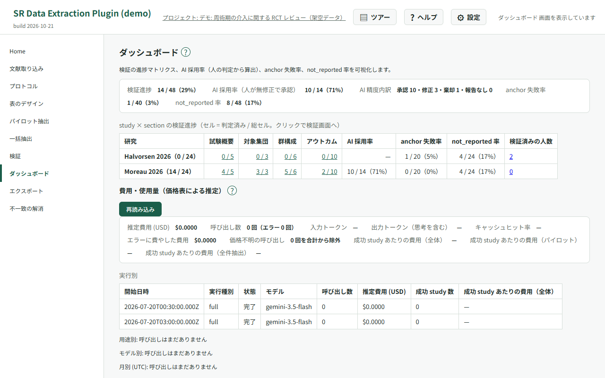
要相談の一覧 Items needing discussion
自分が「要相談」を付けたセルを study・項目・現在の値・メモ・判定者の一覧で確認できます。study のリンクで該当セルへ移り、印を外すと一覧から消えます。wide CSV の末尾には consult_fields 列を常に出し、確定 annotator の印がある項目名を表のデザインの項目順に | で連結します（印なしは空欄）。列名が既存列と重なる場合は _2、_3 … を付けます。long の flag 列は有効な印を consult、印なしを空欄で出します。audit.csv には付け外しが各 1 行で出ます。 Your flagged cells are listed with study, field, current value, note and reviewer. Follow the study link to the exact cell; clearing the flag removes it from the list. Wide CSV always ends with consult_fields, listing the flagged study field names for the final annotator in schema field order, separated by | (blank when none). If the column name is already used, it receives a suffix such as _2 or _3. The long CSV flag column contains consult for active flags, otherwise blank. audit.csv contains one row per flag or clear event.
費用の集計と予算 Track usage and set a budget
オーナーはダッシュボードの「費用・使用量（価格表による推定）」で、累計の費用・呼び出し数・トークン数・キャッシュヒット率と、実行別・用途別・モデル別・月別の内訳を確認できます。呼び出しで取得できたキャッシュ使用量と価格表のキャッシュ単価は、記録する費用の概算に反映されます。価格不明の呼び出しは別途件数が表示され、費用の合計には含まれません。 The owner can open “Cost and usage (estimated from the price table)” on the dashboard to see cumulative cost, calls, tokens and cache hit rate, with breakdowns by run, purpose, model and month. Recorded cost estimates account for reported cache usage and the price table’s cache rates when available. Calls with unknown prices are counted separately and excluded from the cost total.
「プロジェクト予算 (USD)」に 0 より大きい金額を入力し、「予算を保存」を押します。一括抽出では累計と今回の推定費用が予算を超える見込みなら警告しますが、実行は止めません。価格不明の呼び出しがあると費用を把握しきれないため、契約先の請求額も確認してください。「予算を解除」で設定を取り消せます。予算を設定すると旧版の拡張ではプロジェクトを開けなくなり、解除すると再び開けます。 Enter an amount greater than zero in “Project budget (USD)” and press “Save budget”. Full extraction warns when cumulative spending plus the new estimate is likely to exceed the budget, but does not block the run. Unknown prices leave gaps in the estimate, so also check your provider’s billing. Use “Clear budget” to remove the setting. Older extension versions cannot open a project with a budget set; clearing it restores access.
10. 独立二重レビューと不一致の解消 10. Independent dual review and conflict resolution
検証画面には自分の判定だけが表示されます。オーナーと裁定者には「不一致の解消」への案内が表示され、自分が表示中の論文の判定を終えると「不一致を確認」からその論文へ移動できます。ほかに検証を終えた人の人数も表示されます。オーナーのダッシュボードには、自分も含めた「検証済みの人数」と、その論文の不一致の解消へのリンクが表示されます。完了は、検証画面と同じセル集合が 1 件以上あり、すべて判定済みの状態です。AI を見て検証する人は表示中の run の AI 抽出だけにある項目も数え、独立入力の人は数えません。人数は自分の判定完了後に読み込みます。検証画面では読み込み中の案内を表示し、失敗時は人数を省略します。ダッシュボードでは集計後に人数を読み込み、読み込み中・失敗時は「—」を表示します。不一致の解消では、判定の保存中は完了を待ってから一覧を更新します。レビュアーにはこれらの案内や人数は表示されません。 Verification shows only your own decisions. Owners and adjudicators see a link to “Resolve conflicts”. After completing the current study, use “Check conflicts” to open that study; the number of other reviewers who have finished is also shown. The owner's dashboard shows “Completed reviewers”, including the owner, with a link to resolve conflicts for that study. Completion requires at least one cell and a decision for every cell shown in verification. For reviewers using AI, this includes instances found only in the displayed AI extraction runs; independent reviewers exclude them. Counts load after you finish your decisions. Verification shows a loading message and omits the count if loading fails. The dashboard loads counts after its summary and shows “—” while loading or unavailable. Resolve conflicts waits for pending decisions to finish saving before refreshing the list. Reviewers do not see these links or counts.
2 名で独立に抽出し、不一致を裁定する運用に対応しています。オーナーが Home の「レビュアー管理」で共同研究者のメールアドレスを登録し、モード（AI 抽出を見ながらの検証 = with AI / AI を見ずに自分で入力 = independent）を選びます。「フォルダ未共有」が表示されたら、その行の「フォルダを共有し直す」でシートとフォルダを共有し直せます。共有に失敗した場合は、カード内の警告に従って Drive から手動で共有してください。 Two reviewers can extract independently and have disagreements adjudicated. The owner registers collaborators by email under “Reviewer management” on Home and picks their mode (verify with AI, or independent entry without seeing AI output). If “Folder not shared” appears, use “Share the folder again” on that row to share the sheet and folder again. If sharing fails, follow the warning in the card to share manually in Drive.
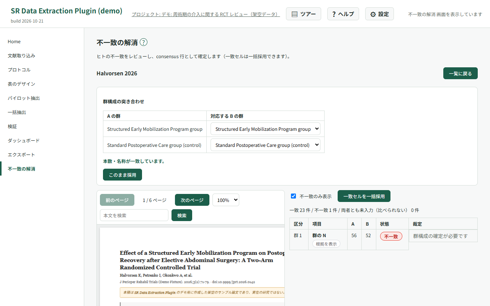
- 招待されたレビュアーは、共有されたスプレッドシート ID でプロジェクトを開き、Home の「プロジェクトファイルへのアクセスを付与」で PDF と抽出テキストへのアクセスを許可してから検証に入ります。 An invited reviewer opens the project by its shared spreadsheet ID, then grants access to the project files (PDFs and extracted text) from Home before verifying.
- 2 名の検証が揃った試験は「不一致の解消」画面で処理します。群構成を突き合わせ、一致セルは一括採用、不一致セルは個別に裁定して consensus（確定版）を作ります。2 名とも空のセルは比べられないため、一致には数えず「両者とも未入力」として別に件数を出し、一括採用の対象からも外します（「不一致のみ表示」でも表示されるので、個別に裁定してください）。レビュアー間一致度（κ）も確認できます。一致度は 2 名とも検証を終えた試験だけで計算し、比べられるセルが 1 件もないときは「比べられるセルがありません」と表示します。 Once both reviewers are done, the “Resolve conflicts” screen matches the arm structures, bulk-accepts agreeing cells and lets you settle each disagreement into a consensus row. Cells empty on both sides cannot be compared: they are not counted as matching, are shown with their own count as “Both empty”, are left out of the bulk accept, and still appear under “Show mismatches only” so you can settle them one by one. Inter-reviewer agreement (κ) is shown as well. It uses only studies both reviewers have finished, and shows “No cells to compare” when no cell has values from both reviewers.
- 不一致の解消画面では、セルごとに 2 名の根拠を並べ、誰の一覧にある引用か（A / B / A・B）を示します。AI 抽出を見ながら検証した人は、引用を直していなければ AI の引用が、独立入力の人は自分で足した引用が並びます。最終の根拠に採用する引用にチェックを入れます。最初に操作するまでは「最終の根拠はまだ選ばれていません」と表示し、自動では採用しません。 On the “Resolve conflicts” screen, each cell lists both reviewers’ evidence and shows whose list each quote is in (A / B / A & B). For a reviewer who verified with AI, this is the AI quotes unless they edited them; for an independent reviewer, it is the quotes they added. Tick the quotes to adopt as final evidence. Until you do, the cell shows “Final quotes have not been chosen”; nothing is adopted automatically.
- 「PDF から追加」でセルを選んでから PDF の文を選ぶと、裁定者が引用を足せます（操作は検証画面と同じです）。根拠の選択は値の裁定とは別の操作で、どちらを先にしてもかまいません。 Press “Add from PDF” on a cell, then select text in the PDF to add your own quote as adjudicator (it works the same way as on the verification screen). Choosing evidence is separate from settling the value, so you can do either first.
- 複数選択の項目は、選択肢の並び順をそろえてから一致を判定します。 For multiple-selection fields, the options are put in the same order before checking agreement.
作業開始後のレビューモード Review modes after work has started
Home でレビュアーを登録するときは、作業を始める前にモードを決めてください。同じメールアドレスで判定・データ・群構成を記録した後は、AI を見る作業と独立入力を切り替える登録はできません。独立入力のレビュアーから裁定者への変更も対象です。別の種類で作業する場合は別の Google アカウントを登録します。未着手でモードを変更した場合は、相手に画面を開き直してもらってください。 Choose the review mode on Home before the reviewer starts work. Once judgments, data or arm structures have been recorded for an email address, registration cannot switch that person between working with AI and independent entry. This also applies to changing an independent reviewer to an adjudicator. Register a different Google account for the other type of work. If you change the mode before work starts, ask the reviewer to reopen the screen.
11. エクスポートする 11. Export
| 形式Format | 1 行の単位One row is | 用途Use |
|---|---|---|
study_wide |
1 試験 one study | Table 1 の下書き・Excel での目視確認 Drafting Table 1, eyeballing in Excel |
results_long |
1 結果セル（群 × アウトカム・RoB） one result cell (arm × outcome, RoB) | R でのメタ解析前処理 Pre-processing for meta-analysis in R |
audit |
1 判定イベント + AI 根拠 one decision event with its AI evidence | 監査・supplementary・抽出精度研究 Audit trail, supplementary material, accuracy studies |
evidence_quotes |
1 引用 one quote | 根拠の表（文・頁・節）・投稿時の supplementary Evidence table (text, page, section), supplementary material |
確認途中で考察やミーティングの準備に使うときは、「未確認分を AI の値で補う（仮エクスポート）」をオンにします（既定はオフ）。study_wide / results_long のみ、未確認の文献・セルを AI の値で補います。最終データではありません。人が確認していない AI の値を含みます。wide の各項目の {field}__source 列、long の source 列で human（人の確認済み）/ consensus（裁定済み）/ ai_unverified（未確認）を区別し、ファイル名に _draft が付きます。audit・R セット・Methods 文案・根拠の表には影響しません。最終データを出すときはオフに戻してください。
For discussion or meeting preparation while verification is ongoing, enable “Fill unverified cells with AI values (draft export)” (off by default). Only study_wide and results_long fill unverified studies and cells with AI values. This is not final data: it includes AI values that have not been verified by a human. Each wide field has a {field}__source column; long has a source column: human (verified), consensus (adjudicated), or ai_unverified (unverified). Filenames include _draft. Audit, R sets, Methods text and evidence quotes remain unchanged. Turn this option off when exporting final data.
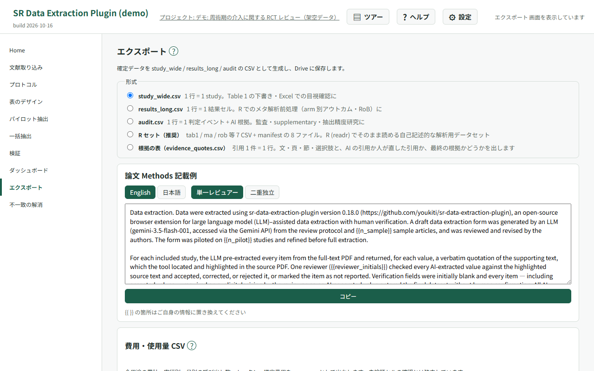
CSV は Drive に保存され、同時にダウンロードされます。メタ解析用の R セット（ma.csv
等）の書き出しと、論文の Methods
の記載例を出すカードも用意しています（数値・人数・手順が実際と一致しているかを必ず確かめて直してください）。未検証の項目が残っているとエクスポート前に警告が出ます。
CSVs are saved to Drive and downloaded at the same time. You can also export an R-ready meta-analysis set
(e.g. ma.csv) and copy an example Methods paragraph (always check that its numbers, reviewer counts and procedures match what you actually did, and edit it). A warning appears if unverified cells
remain.
-
複数選択の項目は、
study_wide.csvでは項目の列の直後に、選択肢ごとの 1/0 の列（項目名__選択肢。選択肢は小文字にし、英数字以外は_にします）が並びます。自由記述付きの選択肢には、説明の列（…_text）も付きます。未検証のセルとNRのセルでは、これらの列は空になります。単独選択肢（NA など）が選ばれた論文では、ほかの選択肢の列が 0 になるため、割合を出すときは集計側で除いてください。results_long.csvと R セットには、選択肢を|でつないだ値のまま出ます。 For multiple-selection fields,study_wide.csvadds a 1/0 column per option (fieldname__option, with the option lowercased and anything other than letters and digits turned into_) right after the field’s own column. Options with free text also get a description column (…_text). These columns are empty for unverified cells and forNRcells. Papers where an exclusive option (such as NA) was chosen get 0 in the other option columns, so exclude them when you compute proportions.results_long.csvand the R set keep the options joined with|. -
evidence_quotes.csvは、引用 1 件を 1 行にした根拠の表です。引用の文・頁・節・選択肢／テーマ・出所の文書と、AI の引用か人が足した引用か、誰の一覧か、最終の根拠か（is_final）を出します。AI の引用と、各レビュアー・裁定（consensus）が直した一覧の両方が並びます。evidence_quotes.csvis the evidence table with one row per quote. It gives the quote text, page, section, option or theme, source document, whether it is an AI or a human-added quote, whose list it belongs to, and whether it is final evidence (is_final). It includes both the AI quotes and the lists edited by each reviewer and by adjudication (consensus). -
is_finalが TRUE になるのは、確定版（consensus、無ければ唯一の人の行）の一覧にある引用です。裁定した試験で最終の根拠を選んでいないセルには、TRUE の行はありません。人の行が確定版で、その人が引用を直していないセルでは、AI 抽出を見ながら検証した人なら AI の引用が TRUE になり、独立入力の人なら TRUE の行はありません。確定版を決められない試験（2 名が検証し、裁定がまだの試験など）は、すべて FALSE です。audit.csvには、人が直した引用は載りません。is_finalis TRUE for quotes in the final annotator’s list (consensus, or the only human reviewer if there is no consensus). In an adjudicated study, a cell whose final evidence was not chosen has no TRUE row. When the final annotator is a single reviewer, for cells that reviewer did not edit, the AI quotes are TRUE if they verified with AI; if they entered data independently, no row is TRUE. If the final annotator cannot be determined (for example, two reviewers and no adjudication yet), every row is FALSE.audit.csvdoes not include quotes edited by people.
使用量を CSV に出す Export usage as CSV
オーナーはエクスポート画面の「費用・使用量 CSV」で「使用量 CSV を生成」を押します。全用途の累計・実行別・月別の呼び出し数、トークン数、推定費用を usage.csv に出し、Drive に保存します。生成後は「ローカル保存」も使えます。データのエクスポートとは別操作で、未検証セルの確認にかかわらず生成できます。
On the export screen, the owner presses “Generate usage CSV” under “Cost and usage CSV”. This writes calls, tokens and estimated costs for all purposes, as totals and by run and month, to usage.csv in Drive. After generation, “Save locally” is also available. This is separate from exporting extracted data and does not require confirmation about unverified cells.
12. 設定（BYOK・接続方式・レート制限） 12. Options (BYOK, providers, rate limiting)
-
LLM 接続: 接続方式（Gemini / OpenRouter / Anthropic / Azure OpenAI / OpenAI 互換 API /
ローカル LLM）を選ぶと、その方式に要る欄（API キー、方式によっては URL）だけが出ます。キーは方式ごとに保存され、方式を切り替えても消えません。キーはブラウザ内（
chrome.storage.local）にだけ、暗号化せずに保存され、選んだ接続先への認証にだけ送られます。開発者へ送信されることはありません（BYOK）。共用の PC では、自分専用の Chrome プロファイルで使うか、使い終わったら拡張を削除してください。 LLM connection: choose a connection type (Gemini, OpenRouter, Anthropic, Azure OpenAI, OpenAI-compatible API or Local LLM) and only the fields it needs appear (an API key, plus a URL for some types). Keys are stored per type, so switching types does not erase them. They stay in your browser (chrome.storage.local) unencrypted, are sent only to the chosen provider for authentication, and are never sent to the developer (BYOK). On a shared computer, use your own Chrome profile or remove the extension when you are done. -
既定モデル: 新しい抽出の初期値になります（工場出荷の既定は
gemini-3.8-flash）。候補には、選んだ接続方式のモデルだけが出ます。モデル欄に文字を打つと、その文字を含む候補に絞られます（例: 「sonnet」）。候補に無い名前も、そのまま打てば使えます。OpenRouter から取得した一覧には、構造化出力と画像の入力の両方に対応したモデルだけを出します。OpenRouter から取得したモデルは、一覧と一緒に取得した単価で費用を見積もります（それ以外の接続方式で単価表に無いモデルは「概算不可」）。 Default model: the initial choice for new runs (factory defaultgemini-3.8-flash). The list only shows models of the chosen connection type. Typing in the model field narrows the suggestions to those containing the text (for example “sonnet”); you can also type any name that is not suggested. The list fetched from OpenRouter only includes models that support both structured output and image input. For models fetched from OpenRouter, the cost estimate uses the prices fetched with the list (with other connection types, models not in the price list show “estimate unavailable”). - 保存して接続を確認: 押すと、設定を保存し、モデル一覧を取得し（取得できる方式のみ）、選んだモデルで短い呼び出しを送って、結果を 1 行で表示します。失敗したときは、API キーが受け付けられなかったのか、モデルがその方式に無いのかなど、どこで失敗したかを示します。取得したモデルは、スキーマ・パイロット・一括抽出の画面のモデル選択にも出ます。 Save and check connection: saves the settings, fetches the model list (where the type supports it), sends a short call with the chosen model, and shows the result on one line. On failure it says where it failed, for example a rejected API key or a model that the type does not have. Fetched models also appear in the model choice on the schema, pilot and full-extraction screens.
-
ローカル LLM: 手元の PC で動かしている LLM（Ollama・LM Studio など）を使います。「Ollama」「LM
Studio」のボタンで URL が入ります。URL は
localhost・127.0.0.1・[::1]に限られ、API キーは要りません。外部の OpenAI 互換サービスは「OpenAI 互換 API」を選び、完全 URL と API キーを入力します（Chrome の接続許可も求められます）。 Local LLM: use an LLM running on your own computer (Ollama, LM Studio and the like). The “Ollama” and “LM Studio” buttons fill in the URL. The URL must be onlocalhost/127.0.0.1/[::1], and no API key is needed. For an external OpenAI-compatible service, choose “OpenAI-compatible API” and enter the full URL and an API key (Chrome also asks for host permission). - reasoning effort の既定値: モデルが答える前に考える量を low / medium / high から選びます。low ほど速く安くなりますが、抽出の正確度が下がることがあります。未設定のときは、Gemini 3 系と Anthropic には low を送り、OpenRouter・OpenAI 互換 API・Azure OpenAI には何も送りません（各サービスの既定どおり）。Gemini 2.5 系には送りません。 Default reasoning effort: how much the model thinks before answering (low, medium or high); lower is faster and cheaper but can reduce extraction accuracy. When unset, low is sent to Gemini 3 models and Anthropic, and nothing is sent to OpenRouter, OpenAI-compatible APIs or Azure OpenAI (their own defaults apply). It is not sent to Gemini 2.5 models.
- レート制限: 契約プランに合わせた tier を選ぶと、一括抽出のスロットル間隔・同時実行数・再試行が調整され、429 エラーを避けられます。tier を「カスタム」にすれば RPM と同時実行数を直接指定できます。 Rate limiting: choosing the tier of your plan tunes throttling, concurrency and retries during full extraction so you avoid 429s. “Custom” lets you set RPM and concurrency directly.
- 表示言語: 日本語 / English を切り替えられます（切替は即時に反映されます）。 Display language: switch between Japanese and English; changes apply immediately.
- AI へ送る内容: AI の機能を使う前に出る確認（初回だけ）を「AI へ送る内容の説明を表示」で見直せます。「同意を取り消す」を押すと、次に AI の機能を使うときにまた確認が出ます。 What is sent to the AI: “Show what is sent to the AI” reopens the notice shown before the first AI feature. “Withdraw consent” makes the notice appear again the next time you use an AI feature.
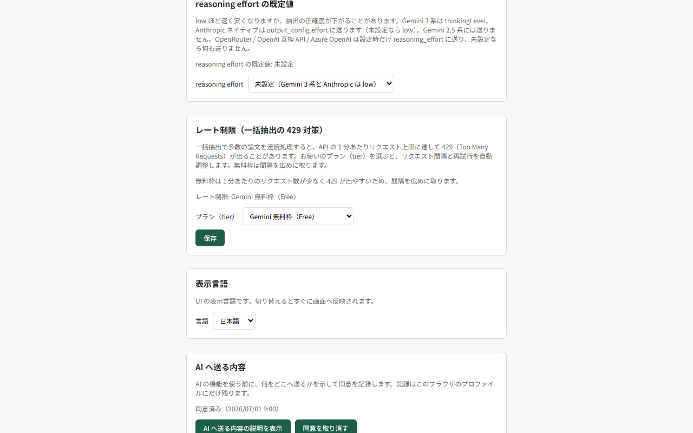
13. トラブルシューティング 13. Troubleshooting
共有されたプロジェクトが「開く権限がありません」になる “You don’t have permission to open this spreadsheet”
本拡張は Drive 全体を読む権限を持たず、drive.file（あなたが選んだファイルと拡張が作ったファイルだけ）で動きます。そのため、他の人が作ったスプレッドシートは
初回に一度だけ Google のファイル選択画面（Picker）で選んで許可する必要があります。エラー表示の下の「Google
で許可する」を押し、同じシートを選んでください。許可は「あなた × そのシート」ごとに 1 回で済みます。
The extension never reads your whole Drive — it uses drive.file, i.e. only files you pick and
files it created. A sheet created by someone else therefore has to be granted once through
the Google file picker: press “Grant with Google” under the error and select the same sheet. One grant per
user and sheet is enough.
「モデル『…』は今の接続方式では使えません」と出て実行できない “The model … cannot be used with the current connection type”
スキーマ・パイロット・一括抽出の画面で選んでいるモデルが、設定画面で保存した接続方式のものではありません（例: 接続方式が
Anthropic なのに gemini-3.8-flash）。このまま送ると接続先がモデルを見つけられずに失敗するため、実行ボタンを押せなくしています。その画面のモデル欄で、今の接続方式のモデルを選び直してください。質問パネルで出たときは、設定画面の「LLM
接続」で既定モデルを選び直します。
The model chosen on the schema, pilot or full-extraction screen does not belong to the connection type
saved in Options (for example gemini-3.8-flash while the type is Anthropic). Sending it would
fail because the provider cannot find the model, so the run button is disabled. Choose a model of the
current type in that screen’s model field. If it appears in the question panel, choose the default model
again under “LLM connection” in Options.
レビュアーとして PDF が開けない As a reviewer, the PDFs will not open
同じ理由です。Home の「プロジェクトファイルへのアクセスを付与」から Picker を開き、表示されたファイル（PDF と抽出テキスト）をすべて選択してください。付与後にオーナーが新しい文献を追加した場合は「アクセスを付与し直す」でやり直します。一覧には未付与のファイルだけが表示されます。一覧が空のときは、フォルダが共有されていない可能性があります。オーナーに、レビュアー管理の「フォルダを共有し直す」を依頼してください。 Same cause. Open the picker from “Grant access to project files” on Home and select them all (PDFs and extracted text). If the owner adds documents later, use “Grant access again”. The list shows only files not yet granted. If it is empty, the folder may not be shared with you. Ask the owner to use “Share the folder again” under Reviewer management.
一括抽出が 429（レート制限）で失敗する Full extraction fails with 429 (rate limited)
設定画面の「レート制限」で、契約プランに合った tier（無料枠なら低い tier）を選んでください。失敗した文献は一括抽出画面から再試行できます。無料枠では 1 分あたりの上限が小さく、1 日あたりの上限もあるため、件数が多い場合は時間をおいて分割実行するのが確実です。 Pick the tier matching your plan (a low tier for free quotas) under “Rate limiting”. Failed documents can be retried from the extraction screen. Free quotas have small per-minute limits and daily limits too, so splitting a large batch over time is the safest route.
ハイライトが出ない / 根拠が見つからない No highlight appears / the quote cannot be found
スキャン PDF（no_text_layer）にはテキスト層がないため、ハイライト検証はできません。テキスト層のある
PDF でも、記号や改行の違いで位置特定に失敗することがあります（anchor 失敗）。その場合は quote
全文を見ながら「本文内を検索」または「AI で再特定」を使ってください。
Scanned PDFs (no_text_layer) have no text layer, so highlighting is unavailable. Even with a
text layer, symbols or line breaks can defeat anchoring; use “search in text” or “relocate with AI” while
reading the full quote.
AI 抽出の結果が空だった The AI extraction came back empty
検証画面には「AI 抽出結果なし」として表示され、値は手入力で記録できます。抽出自体をやり直す場合は、一括抽出画面から該当試験だけを再実行してください。 The verification screen shows “no AI result” and you can enter values by hand. To retry the extraction, re-run just that study from the extraction screen.
保存に失敗した / オフラインになった Saving failed / you went offline
判定はオフラインキューに退避され、接続が戻ると自動で再送されます。キュー件数は画面上部に表示されます。ログインの有効期限が切れた場合は再ログインを促す表示が出ます。 Decisions are queued and resent automatically when the connection returns; the queue size is shown at the top of the screen. If your sign-in expired, you will be prompted to sign in again.
保存の競合と API エラーの記録 Save conflicts and API error records
保存の競合が表示されている間は、検証の入力操作が止まります。PDF は引き続き確認できます。画面の案内に従って再読み込みし、保存されなかった判定をやり直してください。 When a save conflict is displayed, verification input is disabled while the PDF remains available to read. Follow the on-screen instructions to reload, then repeat any judgment that was not saved.
Google API の失敗の診断には、プロジェクトのスプレッドシートにある ApiErrorLog タブも確認できます。記録先へ送れない間はブラウザ内で待機するため、直後にはシートに反映されないことがあります。
For diagnostics on Google API failures, check the ApiErrorLog tab in the project spreadsheet. Entries wait in the browser when they cannot be sent, so they may not appear in the sheet immediately.
14. よくある質問 14. FAQ
論文の PDF はどこへ送信されますか？ Where are my PDFs sent?
あなたの Google Drive と、あなたが設定した LLM API だけです。開発者が運用するサーバーは存在せず、開発者がデータを受け取ることはありません（プライバシーポリシー）。 Only to your own Google Drive and to the LLM API you configured. There is no developer-operated server and the developer never receives your data.
利用料はかかりますか？ Does it cost anything?
拡張自体は無料（MIT ライセンス）です。LLM API の利用料はあなたと API 提供者の契約で発生します（無料枠のみで使うこともできます）。 The extension itself is free and MIT-licensed. LLM usage is billed by your provider under your own contract (free tiers work too).
無料枠には次の点に注意してください。Gemini API の無料枠（課金を有効にしていないプロジェクト）では、送った内容が Google の製品の改善に使われ、人が読むことがあります。未公開のデータや機密資料は有料枠で扱ってください（プライバシーポリシー）。無料枠には 1 分あたりだけでなく 1 日あたりの上限もあります。ダッシュボードの費用は、無料枠で使っていても有料の単価での推定で表示されます。 Note on free tiers: on the Gemini API free tier (a project without billing enabled), what you send is used to improve Google’s products and may be read by humans, so handle unpublished data or confidential material on a paid tier (see the privacy policy). Free tiers have daily limits as well as per-minute limits. The dashboard shows costs estimated at paid prices even when you use a free tier.
どの LLM を使うのがよいですか？ Which LLM should I use?
既定は gemini-3.8-flash です（実データでのベンチマークで、項目正確度が従来の既定と同程度以上で、費用と応答時間が小さかったため）。ただし、このベンチマークは、Gemini
の reasoning effort を low に固定する変更（2026-10-16）より前に、モデル既定の思考量で測りました。現在の既定（low）での正確度は測っていません（評価の限界）。まずはパイロット抽出で 2〜3
本試し、あなたの領域の論文で妥当な結果が出るモデルを選んでください。モデルや reasoning effort
を変えたときも、パイロット抽出で確かめてください。
The default is gemini-3.8-flash: on our real-data benchmark its accuracy was on par with or better than the previous default, at lower cost and latency. That benchmark, however, ran with each model’s default amount of thinking, before Gemini’s reasoning effort was fixed at low (2026-10-16); accuracy at the current default (low) has not been measured (see limits of our evaluation). Run a pilot
on 2–3 papers and pick whatever performs well on the literature in your field, and run a pilot again whenever you change the model or reasoning effort.
AI の抽出をそのまま論文に使ってよいですか？ Can I publish the AI output as-is?
本拡張は「AI 事前抽出 + 人間検証」を前提に設計されています。すべての値は人が根拠を見て判定する運用にしてください。エクスポートの audit 形式が、その検証過程の証跡になります。 The tool is built around “AI pre-extraction plus human verification”. Every value should be checked against its evidence by a human; the audit export documents that process.
スキャン PDF（テキスト層なし）でも使えますか？ Does it work with scanned PDFs?
pdf_native モードでの抽出は可能ですが、根拠ハイライトは使えません。可能であれば OCR 済みの PDF を取り込んでください。 They can be processed in pdf_native mode, but evidence highlighting is unavailable. Import OCR’d PDFs where possible.
データを消したいときは？ How do I delete my data?
Google Drive / Sheets 上のプロジェクトファイルを削除し、拡張をアンインストールしてください。ブラウザ内の設定（API キー等）は拡張の削除時に Chrome が消去します。 Delete the project files in your Google Drive / Sheets and uninstall the extension; Chrome removes the in-browser settings (API keys and so on) with it.
開発の資金と利益相反は？ Who funds the development? Any conflicts of interest?
開発は JSPS 科研費 25K13585 の助成を受けています。開発者は、本ツールが接続する AI 事業者（Google・Anthropic・OpenAI・OpenRouter・Microsoft 等）から金銭その他の利益を受けていません。 Development is supported by JSPS KAKENHI Grant Number 25K13585. The developer receives no money or other benefits from the AI companies this tool connects to (Google, Anthropic, OpenAI, OpenRouter, Microsoft and others).
不具合を見つけました / 機能を提案したいです I found a bug / I have a feature request
GitHub の Issues へお寄せください。 Please open an issue on GitHub.